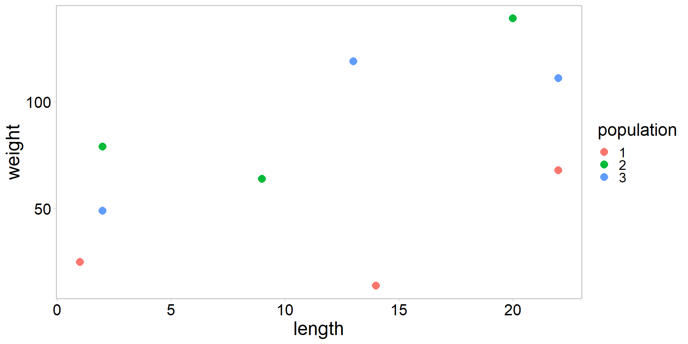
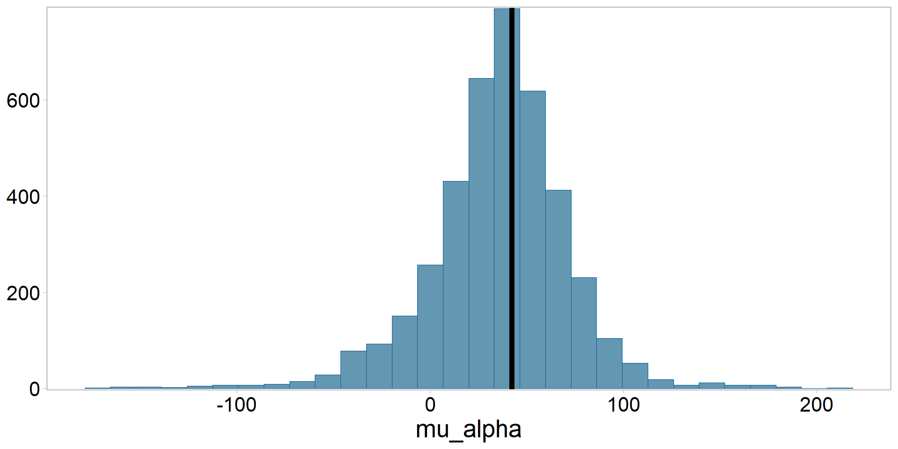

{kind=link}
library(tidyverse)
library(ggqfc)
weight <- c(25, 14, 68, 79, 64, 139, 49, 119, 111) # obs
population <- factor(c(1, 1, 1, 2, 2, 2, 3, 3, 3)) # group
length <- c(1, 14, 22, 2, 9, 20, 2, 13, 22) # covariate
my_df <- data.frame(weight, population, length)
my_df %>%
ggplot(aes(length, weight, color = population)) +
geom_point(pch = 16, size = 3.5) + theme_qfc()Introduction to hierarchical (mixed-effects) models
FW 891
Christopher Cahill
25 September 2023
Purpose
- Introduce an important extention of all previous models
- Will have several lectures on mixed effects models
- An example
- both frequentist and Bayesian
- Explain in words and algebra what mixed effects models are
- Pros and cons of mixed effects modeling
- Why these models likely deserve to be the default approach to many problems
The polyonomous model (misery)
- These models are known by many names:
- Mixed effects models (fixed effects + random effects)
- Multilevel models
- Hierarchical models
- Partial-pooling models
- Our example model might also be called:
- Random-intercepts model
Kery and Schaub 2012; McElreath 2023
An example to get things started
An example to get things started
- Revisiting the ANCOVA example, but let’s change the variable names
- Plot the weight of emperor scorpions as a function of length
An example to get things started
- What does this plot suggest?
An example to get things started
- Linear relationship between weight and length
- Perhaps with a different intercept for each population?
- Regression model should account for population differences
- The simplest way to account for population differences:
\[ \begin{array}{l} \operatorname{weight}_{i}=\alpha_{j(i)}+\beta \cdot \text { length }_{i}+\varepsilon_{i} \\ \varepsilon_{i} \sim \operatorname{Normal}\left(0, \sigma^{2}\right) \end{array} \]
- Weight of scorpion i depends on length in a linear way, where each population j has a different intercept, and residuals come from a zero-mean normal distribution
Motivating random effects
- Independent intercepts for each population represents one assumption that we might make about the data
- Assumption 1: No Pooling: these are the only three populations we are interested in (no pooling; estimate each \(\alpha_{j}\) separately)
see Gelman and Hill 2007; Kery and Schaub 2012
Motivating random effects
- Independent intercepts for each population represents one assumption that we might make about the data
- Assumption 1: No Pooling: these are the only three populations we are interested in (no pooling; estimate each \(\alpha_{j}\) separately)
- Assumption 2: Complete Pooling: we think these actually represent one population (complete pooling; estimate one \(\alpha\) across all three populations)
see Gelman and Hill 2007; Kery and Schaub 2012
Motivating random effects
- Independent intercepts for each population represents one assumption that we might make about the data
- Assumption 1: No Pooling: these are the only three populations we are interested in (no pooling; estimate each \(\alpha_{j}\) separately)
- Assumption 2: Complete Pooling: we think these actually represent one population (complete pooling; estimate one \(\alpha\) across all three populations)
- Assumption 3: Partial Pooling: these populations merely represent a sample from a larger number of scorpion populations that we could have studied and we want our conclusions to generalize to this larger universe of statistical populations (hierarchical, partial pooling; model parameters are viewed as a sample from a population distribution)
see Gelman and Hill 2007; Kery and Schaub 2012
Translating assumption 1 to math
- No pooling:
\[ \begin{array}{l} \operatorname{weight}_{i}=\alpha_{j(i)}+\beta \cdot \text { length }_{i}+\varepsilon_{i} \\ \varepsilon_{i} \sim \operatorname{Normal}\left(0, \sigma^{2}\right) \end{array} \]
Translating assumption 2 to math
- Complete pooling:
\[ \begin{array}{l} \operatorname{weight}_{i}=\alpha+\beta \cdot \text { length }_{i}+\varepsilon_{i} \\ \varepsilon_{i} \sim \operatorname{Normal}\left(0, \sigma^{2}\right) \end{array} \]
- This is literally just a linear regression with one intercept and one slope
Translating assumption 3 to math
- Hierarchical, partial pooling:
\[ \begin{array}{l} \operatorname{weight}_{i}=\alpha_{j(i)}+\beta \cdot \text { length }_{i}+\varepsilon_{i} \\ \varepsilon_{i} \sim \operatorname{Normal}\left(0, \sigma^{2}\right) \\ \alpha_{j} \sim \operatorname{Normal}\left(\mu_{\alpha}, \sigma_{\alpha}^{2}\right) . \quad \text { This line makes } \alpha_{j} \text { random! } \end{array} \]
- Third equation is the only difference between a model that treats \(\alpha_{j}\) as a fixed effect (assumption 1) and one where \(\alpha_{j}\) is a random effect (assumption 3)
Kery and Schaub 2012
Translating assumptions 1-3 to R code (Frequentist)
- Don’t worry about the computational details underlying how
lmer()is estimating the random effects
Compare the models (Frequentist)
Plot no pooling vs. partial pooling
my_df$pred_no <- predict(fit_no, newdata = my_df)
my_df$pred_partial <- predict(fit_partial, newdata = my_df, level = 0)
my_df %>%
ggplot(aes(length, weight, color = population)) +
geom_point(pch = 16, size = 3.5) +
geom_line(data = my_df, aes(y = pred_no), size = 1, lty = 2) +
geom_line(data = my_df, aes(y = pred_partial), size = 1) +
theme_qfc()
What is going on here?
- Solid lines are from mixed-effects model with partial pooling, dashed lines are from ANCOVA with no pooling
Another example of shrinkage
- county-level radon levels
Let’s build the scorpion model in Stan

Math for the random intercepts model
- Hierarchical, partial pooling:
\[ \begin{array}{l} \operatorname{weight}_{i}=\alpha_{j(i)}+\beta \cdot \text { length }_{i}+\varepsilon_{i} \\ \varepsilon_{i} \sim \operatorname{Normal}\left(0, \sigma^{2}\right) \\ \alpha_{j} \sim \operatorname{Normal}\left(\mu_{\alpha}, \sigma_{\alpha}^{2}\right) . \quad \text { This line makes } \alpha_{j} \text { random! } \end{array} \]
- Third equation is the only difference between a model that treats \(\alpha_{j}\) as a fixed effect (assumption 1) and one where \(\alpha_{j}\) is a random effect (assumption 3)
Kery and Schaub 2012
Stan code for the random intercepts model
Stan code for the random intercepts model
//... see code on previous slide
transformed parameters {
vector[3] alpha_pop;
alpha_pop = mu_alpha + alpha_j; // group int is global int + random effect
}
model {
vector[n] w_preds;
mu_alpha ~ normal(50, 15); // hyper prior
sd_alpha ~ normal(0, 100); // hyper prior
alpha_j ~ normal(mu_alpha, sd_alpha); // hyper distribution
b1 ~ normal(0, 10); // slope
sd_obs ~ normal(0, 25); // likelihood error term
for(i in 1:n){
w_preds[i] = alpha_pop[population[i]] + b1*lengths[i];
}
weights ~ normal(w_preds, sd_obs); // likelihood
}Compiling the Stan model
Running that hawg 🐷🐖🐽
fit <- mod$sample(
data = stan_data,
init = inits,
seed = 1,
chains = 4,
iter_warmup = 1000,
iter_sampling = 1000,
parallel_chains = 4,
refresh = 0,
adapt_delta = 0.9999, # look here
step_size = 1e-3 # look here
)Running MCMC with 4 parallel chains...
Chain 4 finished in 1.8 seconds.
Chain 2 finished in 2.0 seconds.
Chain 1 finished in 2.5 seconds.
Chain 3 finished in 2.7 seconds.
All 4 chains finished successfully.
Mean chain execution time: 2.2 seconds.
Total execution time: 2.9 seconds.Check the diagnostics (quick and dirty)
Processing csv files: C:/Users/Charlie/AppData/Local/Temp/Rtmpwj6Onr/random_ints-202309051056-1-121378.csv, C:/Users/Charlie/AppData/Local/Temp/Rtmpwj6Onr/random_ints-202309051056-2-121378.csv, C:/Users/Charlie/AppData/Local/Temp/Rtmpwj6Onr/random_ints-202309051056-3-121378.csv, C:/Users/Charlie/AppData/Local/Temp/Rtmpwj6Onr/random_ints-202309051056-4-121378.csv
Checking sampler transitions treedepth.
Treedepth satisfactory for all transitions.
Checking sampler transitions for divergences.
No divergent transitions found.
Checking E-BFMI - sampler transitions HMC potential energy.
E-BFMI satisfactory.
Effective sample size satisfactory.
Split R-hat values satisfactory all parameters.
Processing complete, no problems detected.Pluck out the posterior summaries and compare to lmer()
# A tibble: 3 × 10
variable mean median sd mad q5 q95 rhat ess_bulk ess_tail
<chr> <num> <num> <num> <num> <num> <num> <num> <num> <num>
1 alpha_pop[1] 9.75 8.79 22.9 21.3 -25.3 49.3 1.00 1284. 1097.
2 alpha_pop[2] 61.5 62.3 20.3 18.7 28.3 92.4 1.00 1627. 1153.
3 alpha_pop[3] 56.5 56.8 21.5 19.8 22.2 90.4 1.00 1930. 1829.[1] 8.650009 61.667157 56.276072- Pretty similar estimates (small sample size)
- You have now fitted a Bayesian hierarchical model
Pluck out the posterior summaries and compare to lmer()
Posterior for \(\beta_{1}\) vs. frequentist estimate

Posterior for \(\mu_{\alpha}\) vs. frequentist estimate
This was meant to be an ‘easy’ example for a reason
- Probably too few groups (usually want 5-10)
- Obviously we can do it, but likely means our priors are more influential
- I had to fiddle with this a bit to get it to behave
- Also low sample size within groups
- This likely explains at least some of the discrepancy among methods
What is a random effect (words)
- Two or more effects or parameters that “belong together” in some way
- e.g., originating from some common distribution
- sometimes called “latent variables,” may not be observable
- Bayesians put prior probabilities on all unknown quantities, MCMC
- Frequentists remove random effects from the model via numerical integration
- Exchangeability as a key assumption
- Ordering of the random effects doesn’t matter
Royle and Dorazio 2008; Kery and Schaub 2012
The distribution of random effects
- Called the hyperdistribution
- The parameters of the random effects distribution are called hyperparameters
- The priors of the hypperparameters are called hyperpriors
- No rule against more than one level (i.e., we could have hyper-hyperparameters etc.)
- Key point is to note the hierarchy of effects
- Typically random effects are continuous in ecology
- however see occupancy models or binomial mixture models
Royle and Dorazio 2008; Kery and Schaub 2012
Benefits of hierarchical modeling
- Sounds dope, also scares a lot of people
- de facto standard for modern ecological analyses
- Helps you draw (statistical) universe-level inferences if you have a good experimental design
- Borrowing information via a hyperprior
- Robin-Hooding (see Punt et al. 2011)
- Helps safeguard against overfitting
Some reasons we might use mixed effects models
- To adjust for repeat sampling
- To adjust estimates for imbalanced sampling
- To study variation among groups
- To partition variation among groups
- Borrow information
Royle and Dorazio 2008; Kery and Schaub 2012; McElreath 2023
Some reasons we might use mixed effects models
- Avoiding pseudoreplication
- Improving scope of inference
- To avoid averaging
- Improve understanding
- Many common classes of models can be reformulated as hierarchical models
- McElreath (2023) argues mixed effects methods should be the default for many modeling problems
Royle and Dorazio 2008; Kery and Schaub 2012; McElreath 2023
Drawbacks of hierarchical modeling?
Why treat any parameter as fixed?
- Treating a factor with very few levels as random results in very imprecise estimates of the hyperparameter
- Rarely treat factors with fewer than 5-10 levels as random (however see Gelman 2005)
- Assumption of exchangeability may not hold, particularly if groups differ in some systematic way
Hierarchical modeling as a philosophical middle ground
- Berliner (1966) offered a definition of hierarchical models based on sub-models and inference from a joint probability distribution:
\[ \begin{array}{l} \color{darkgreen}{ [data|process, parameters] } \color{#E78021}{[process|parameters] }\color{#3697DC}{[parameters]} \\ \end{array} \]
observation model component
process model component
assumptions about parameters
A key point:
Berliner 1996; Royle and Dorazio 2008
Hierarchical modeling as a philosophical middle ground
- Berliner (1966) offered a definition of hierarchical models based on sub-models and inference from a joint probability distribution:
\[ \begin{array}{l} \color{darkgreen}{ [data|process, parameters] } \color{#E78021}{[process|parameters] }\color{#3697DC}{[parameters]} \\ \end{array} \]
observation model component
process model component
assumptions about parameters
A key point:
- Hierarchical models admit observation error, conditioned on some (underlying) ecological process of interest and your prior assumptions
Berliner 1996; Royle and Dorazio 2008
Hierarchical modeling as a philosophical middle ground
- Berliner (1966) offered a definition of hierarchical models based on sub-models and inference from a joint probability distribution:
\[ \begin{array}{l} \color{darkgreen}{ [data|process, parameters] } \color{#E78021}{[process|parameters] }\color{#3697DC}{[parameters]} \\ \end{array} \]
observation model component
process model component
assumptions about parameters
A key point:
- Hierarchical models admit observation error, conditioned on some (underlying) ecological process of interest and your prior assumptions
Whenever possible, prefer a hiearchical model based on an explicit ecological process
Berliner 1996; Royle and Dorazio 2008
Summary and outlook
- Many names for the same general type of model
- Shrinkage as a key concept, which is related to the phrase “partial pooling”
- The difference between fixed effects and random effects, at least for this simple example
- A powerful framework for decomposing complex problems into manageable subcomponents/models
- Many important extentions to this simple model
References
Berliner, L. M. 1996, Hierarchical Bayesian time series models”, Maximum Entropy and Bayesian Methods, 15-22.
Gelman and Hill 2007. Data analysis using regression and multilevel models
Royle and Dorazio 2008. Hierarchical modeling and inference in ecology.
Kery and Schaub. 2012. Bayesian Population Analysis using WinBUGS. Chapter 3
McElreath 2023. Statistical Rethinking. Second Edition, Chapters 2 and 9.
Punt et al. 2011. Among-stock comparisons for improving stock assessments of data-poor stocks: the “Robin Hood” approach. ICES Journal of Marine Sci.
Exercises (optional)
- Prior sensitivity test and model evaluation
It is always good to think critically about model fit. Check the sensitivity of your estimates to the priors used in the sripts, and conduct standard model evaluations. Report your findings.
- Derived parameters
A biologist wants to know whether scorpions in populations 2 and 3 are “different” in some way. Kick out the difference between \(\alpha_{pop_{2}}\) and \(\alpha_{pop_{3}}\) as a derived variable. Calculate the \(\text {Pr} (\alpha_{pop_{2}} > \alpha_{pop_{3}})\) and report this information back to your biologist friend.
- Hyperdistributions
The hyperdistribution contains information on the among-group variability in scorpion weight-length relationship intercept terms. Generate a posterior predictive hyperdistribution for \(\alpha_{pop}\) and plot it to examine the uncertainty we might expect if we were to measure scorpions from an entirely new population (but was otherwise similar to our original three populations)